6/30 – 7/4 · 小三通進出 · 美食 × 古蹟 × 必辦事項
| 日期 | 主題 | 備註 |
|---|---|---|
| 6/30（一） | 小三通抵達 + 聯通取件 | 15:00 到港，下午辦門號與開戶文件 |
| 7/1（二） | 建設銀行開戶 + 思明覓食 | 銀行優先，下午起逛收藏美食 |
| 7/2（三） | 同安老城 Citywalk | 一日遊，美食 + 古蹟 |
| 7/3（四） | 集美學村 | 嘉庚建築、龙舟池、十里长堤 |
| 7/4（五） | 小三通回程 | 10:00 船班，不排行程 |
厦门中山海滨酒店位於思明區鷺江道，緊鄰中山路步行街與輪渡碼頭， 步行可達八市、中山路商圈。酒店周邊交通方便，適合作為思明區美食探索的大本營。 同安區景點距離較遠（車程約 40–50 分鐘），建議安排專程一日遊。 集美學村位於島外集美區（地鐵 1 號線或打車約 25–35 分鐘），安排於 7/3。 小三通進出皆為五通客运码头，距酒店打車約 30–40 分鐘。
點擊地圖標記或下方列表，可開啟 Google 地圖導航。
15:00 到港後時間緊，建議出關後直接打車去聯通，不要先回酒店。聯通營業時間多為 9:00–18:00，建議抵達前致電 10010 確認當日是否營業。
銀行對公／台胞開戶通常 9:00–17:00，建議一開門就去。酒店旁鹭江道就有建設銀行，步行可達。
從酒店出發，建議打車或包車前往同安（車程約 40–50 分鐘），也可搭乘 BRT 快 2 線至同安。
交通：地鐵 1 號線「集美学村站」（酒店步行至鎮海路站換乘，約 40 分鐘），或打車約 25–35 分鐘。
| 餐廳 | 區域 | 必點 | 參考價 |
|---|---|---|---|
| 嗨小鲜 | 思明區 | 烤沙虫、烤皮皮虾、烤鳗鱼、膏蟹 | 時價 |
| 鑫朝刘汤包 | 思明區 | 招牌湯包 + 酸筍湯 | ¥13/籠 |
| 锦上添花好月圆 | 集美區 | 牛三寶米粉、牛腩飯 | ¥18/大碗 |
| 华昌肠粉 | 思明區 | 腸粉（加蝦/豬肝/香腸） | — |
| 一刘汤包 | 同安區 | 招牌湯包 | — |
| 孝杰煎饼 | 同安區 | 肉煎餅（加蛋） | ¥7.5 |
| 汁多鲜 | 同安區 | 大湯包、麵食、肉丸湯 | — |
| 如梅小吃 | 同安區 | 炸串、滿煎糕 | — |
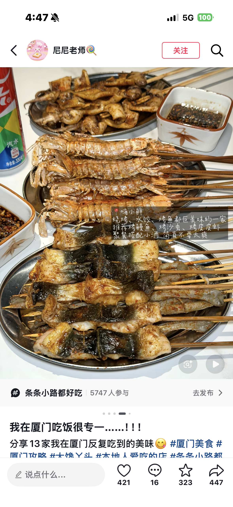
烤沙虫、烤皮皮虾、烤鳗鱼，美味的海鮮燒烤。
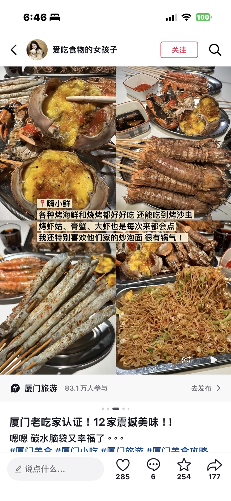
膏蟹、炒泡面也是必點，鍋氣十足。
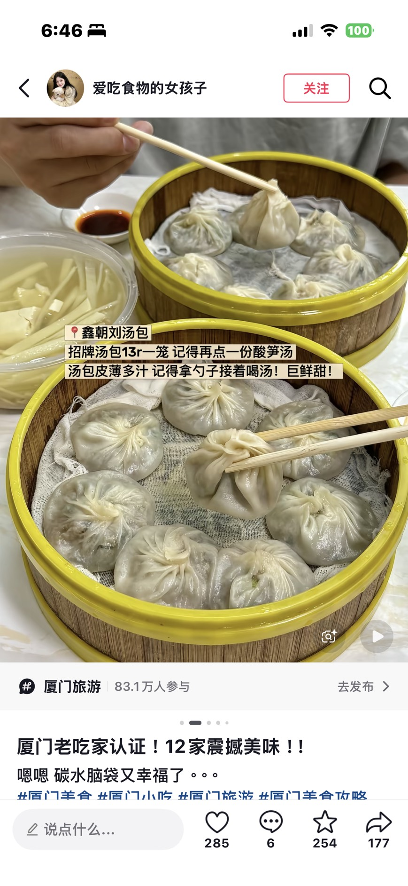
招牌湯包 ¥13/籠，皮薄湯多，配酸筍湯解膩。
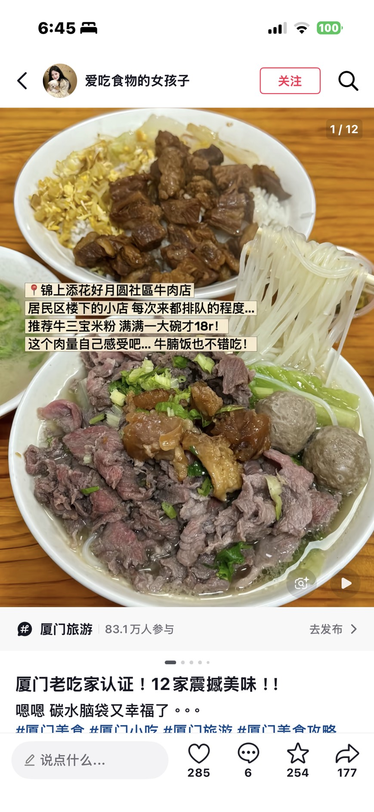
社區牛肉店，牛三寶米粉 ¥18/大碗，常需排隊。
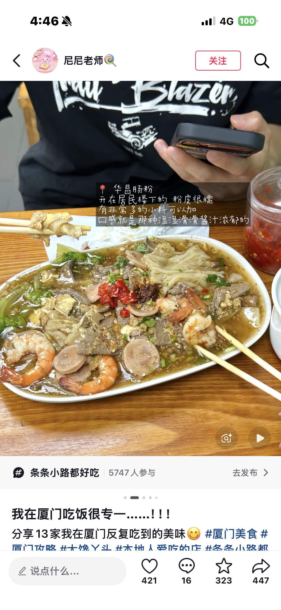
居民樓下腸粉，粉皮糯、醬汁濃，可加多種配料。
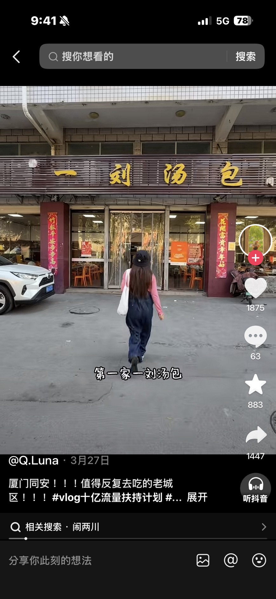
同安老城區代表老店，大皮薄湯足，值得反覆造訪。
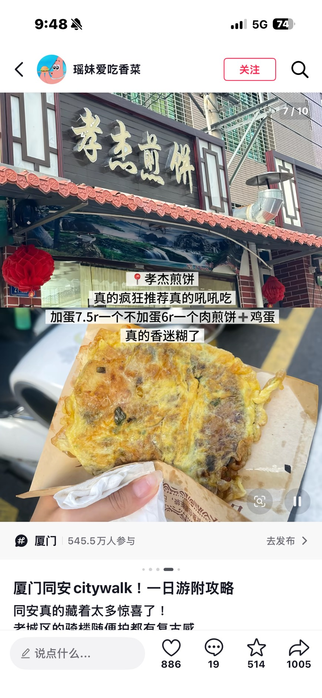
肉煎餅加蛋 ¥7.5，趁熱吃超香。
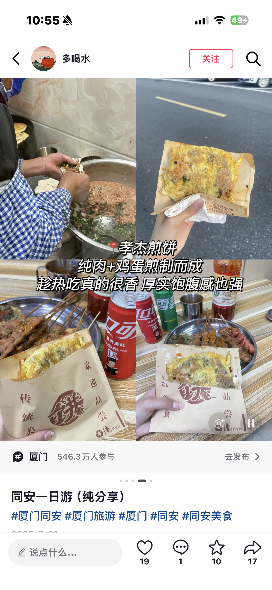
純肉+雞蛋，厚實飽足，可配肉串一起。
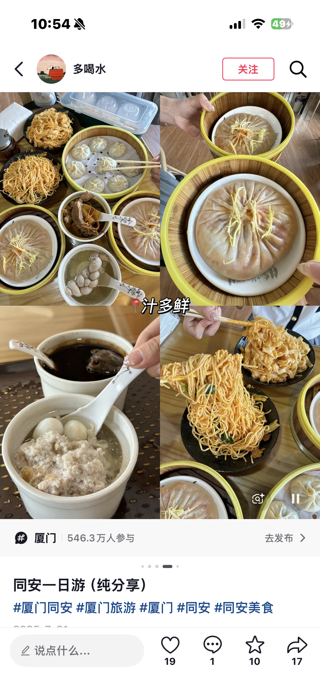
大湯包、麵食、肉丸湯，同安在地名店。
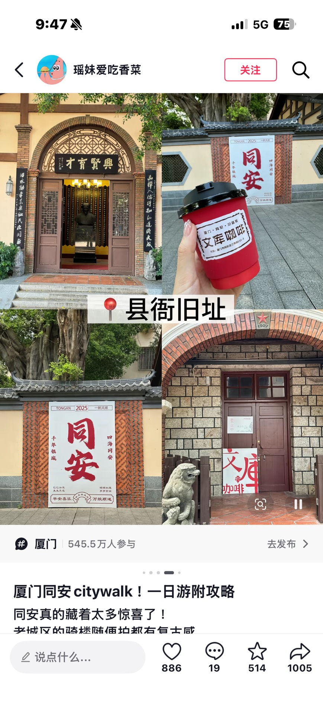
同安大字牆、文库咖啡，老城 Citywalk 必訪。
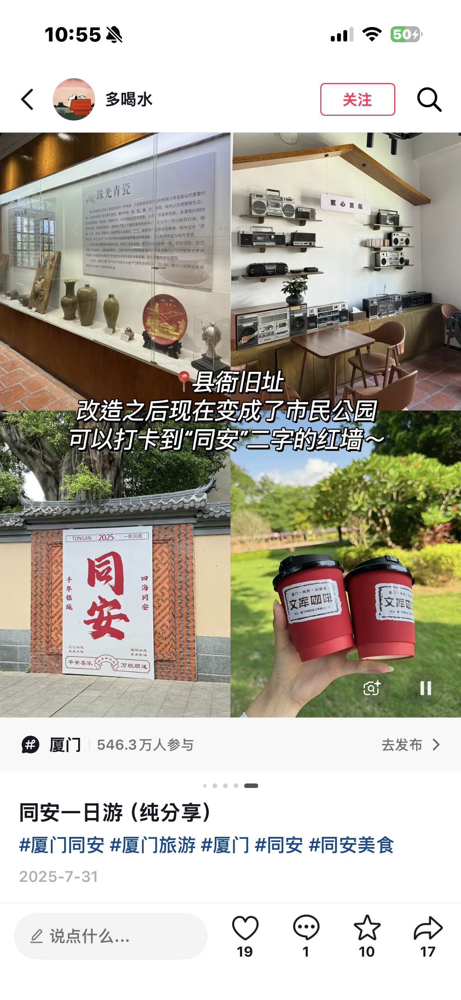
珠光青瓷展、復古收音機主題空間。
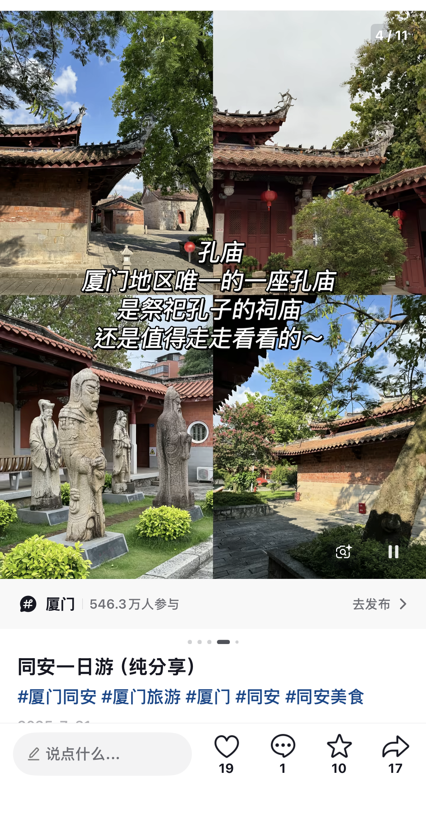
廈門地區唯一孔廟，紅牆綠樹，古樸靜謐。
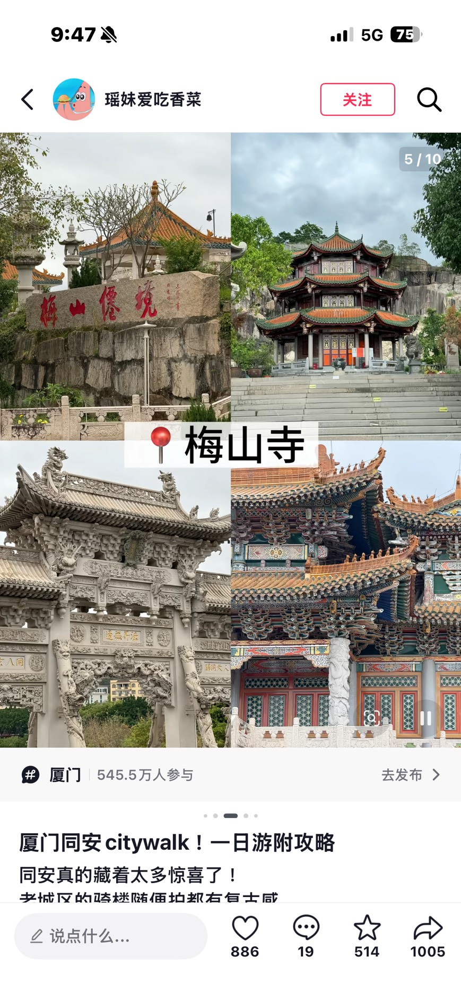
梅山勝境，精緻石牌坊與巍峨寶塔。
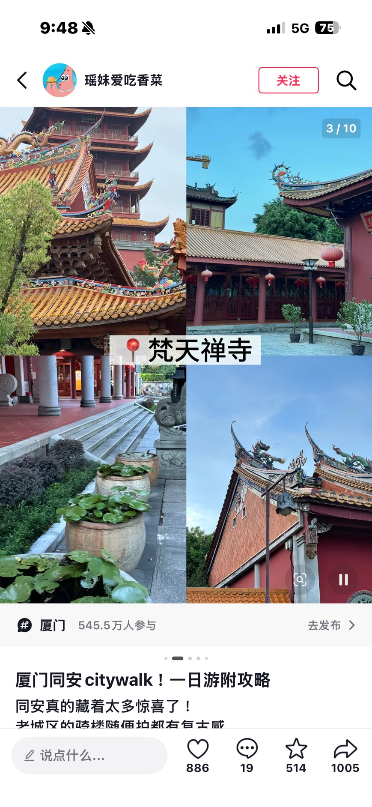
千年古剎，黃瓦紅牆，建築恢宏。
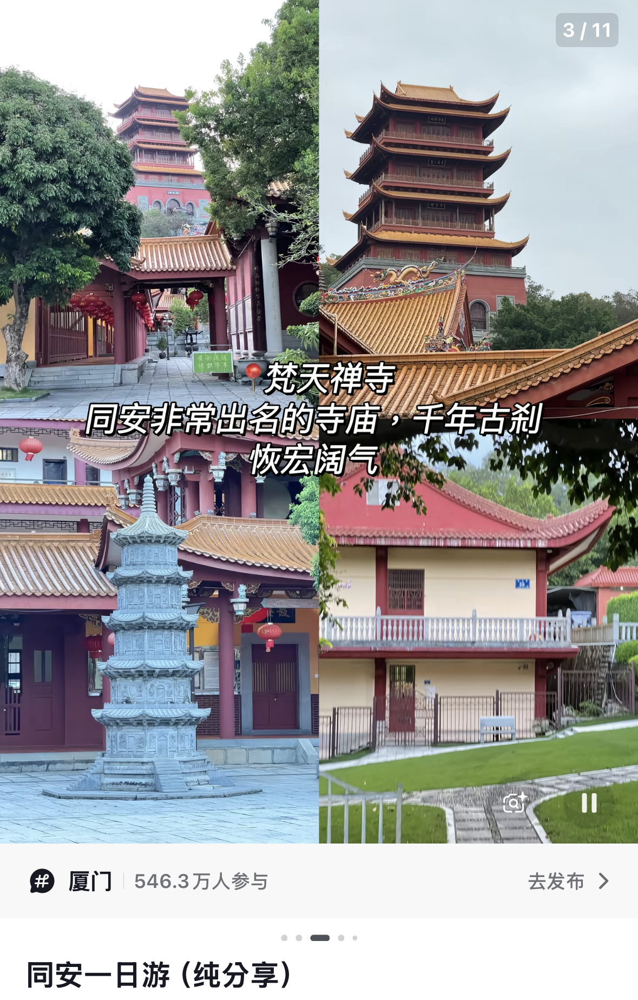
五層寶塔、紅燈籠長廊，同安最出名寺廟。
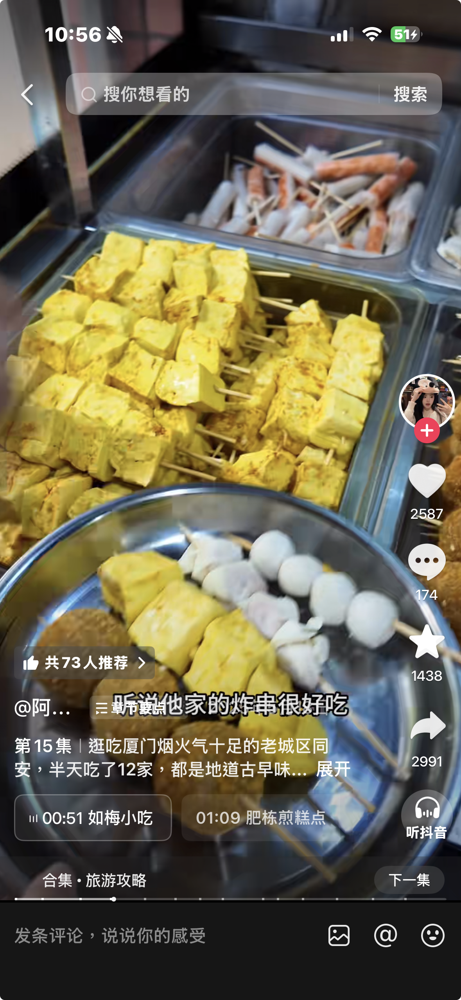
同安老城炸串、煎糕點，滿溢古早煙火氣。